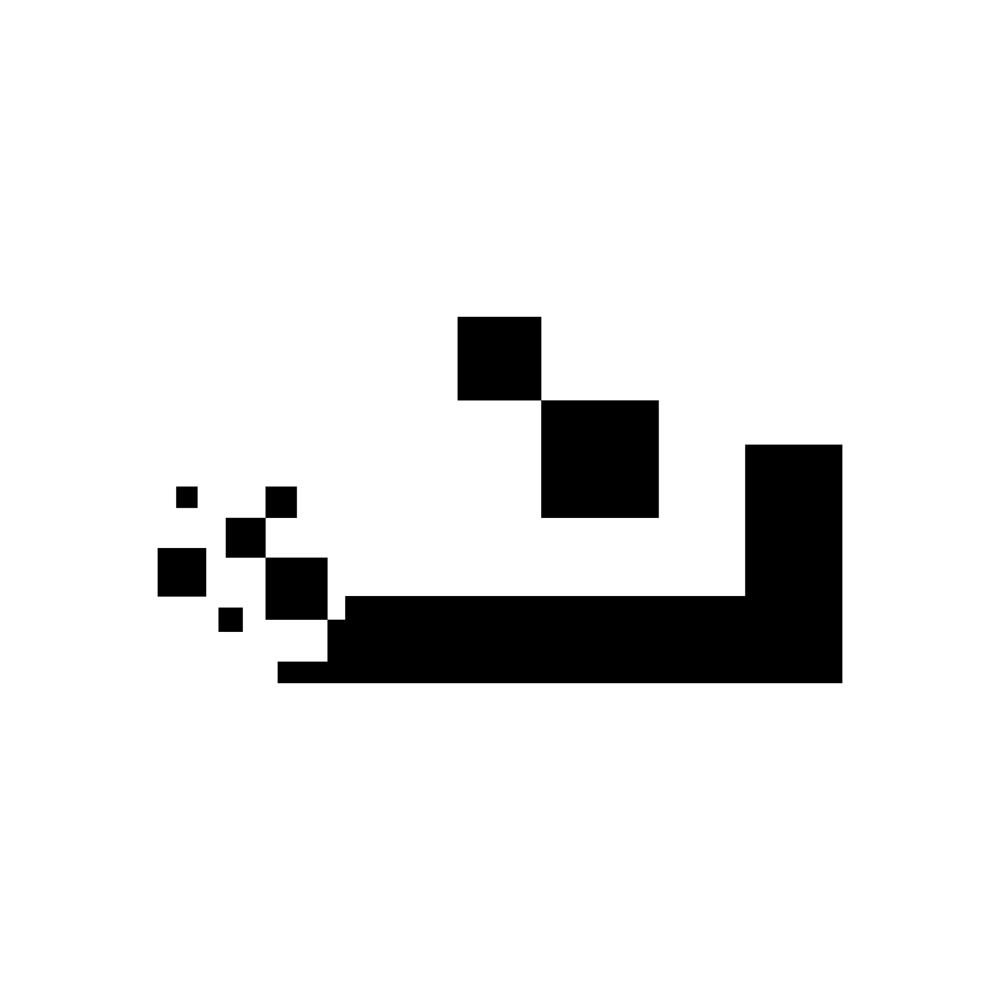

معجم التبصرة (Mu'jam At-Tabshirah) adalah sebuah kamus digital interaktif yang dirancang secara khusus untuk mendampingi dan mempermudah para pelajar bahasa Arab, khususnya bagi mereka yang tengah mendalami serial buku Al-Arabiyah Bayna Yadaik. Kamus ini memuat perbendaharaan kata (mufradat) yang komprehensif, meliputi bentuk kata kerja (fi'il), kata benda (isim), bentuk jamak, makna leksikal, padanan kata (sinonim dan antonim), hingga contoh penerapannya dalam kalimat.
Pada mulanya, naskah perbendaharaan kata ini merupakan karya tulis (berupa dokumen PDF) yang disusun secara runut berdasarkan bab (wahdah). Guna meningkatkan aksesibilitas, kepraktisan, dan kecepatan pencarian kosakata bagi para pembelajar di era modern, naskah dasar tersebut kemudian dialihwahanakan (didigitalisasi) dan dirombak struktur datanya menjadi sebuah aplikasi berbasis website yang responsif.
يسعدنا استقبال اقتراحاتكم لتطوير هذا المعجم.